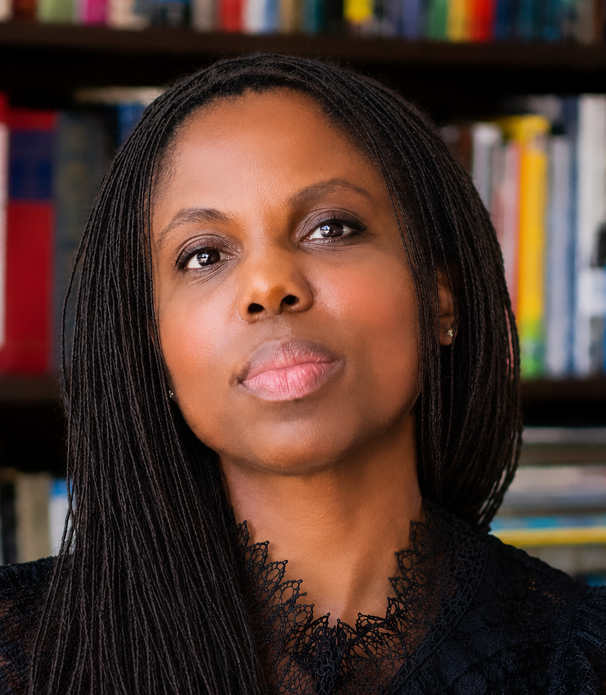

Asha Iman Veal
Professor, Adjunct
she/her
Contact
Bio
Based in Paris, France/Chicago, US.
Curator for globally collaborative exhibitions of contemporary art, focused on conceptual photography and moving-image, cross diasporic themes, and intercultural dialogues through methodologies of art education.
Education:
University of London Institute in Paris, PhD/MPhil / Paris (in process); School of the Art Institute of Chicago, MA / Chicago, field research Tokyo, Japan; The New School, MFA / New York; New York University Gallatin School, BA / New York, field research Tisch School of the Arts special programs Cuba, Tisch School of the Arts special programs Vietnam, Université de Montréal summer study abroad Quebec.
International leadership training:
BMW Foundation Responsible Leadership Network – Transatlantic Core Group Germany & US, Responsible Leadership Women of Colour Canada & US, Inclusive Economies Workgroup North America; Chicago Council on Global Affairs’ Emerging Leaders Cohort; Oracle International Photo Curators Conference – Brazil; Humanity in Action EU/US Senior Fellows Network
Visiting Critic for National & Global Contemporary Art Platforms:
American Academy in Rome/Terra Foundation Affiliated Fellowship, Artadia Awards, Austin Texas Public Arts Jury, Belfast Photo Festival, Chicago Department of Cultural Affairs, Denver Month of Photography, Earth Photo UK, East African Photo Awards, FILTER Photography Festival, FORMAT Photo Festival UK, FotoFest Houston, HARPO Foundation, Hyde Park Art Center, LensCulture Critics Choice Awards, Los Angeles Center of Photography, Ox-Bow Artist Residency, Photographic Resource Center, Rencontres d'Arles France, Rhode Island School of Design, University of Chicago Arts + Public Life, U of C Department of Visual Arts, Visual Studies Workshop NY, World Press Photo Netherlands.
Invited Talks & Papers Presented:
GRAIN Projects UK, Humanity In Action – Netherlands, Istituto Italiano Cultura Chicago, Malcolm X College Chicago, Midwest Art History Society Annual Conference, Oracle International Photo Curators Conference, Pakhuis de Zwijger Amsterdam Netherlands, San Diego State University, Stockholm University Department of Culture and Aesthetics MA International Curating course.
Essays & Printed Conversations:
Jess T. Dugan & Charlotte Cotton: Love Pictures (2026 Radius Books), Diasporas are the Landscape (2025 Visual Studies Workshop), Here, There: New Perspectives on the Collection (2025 Illinois State Museum), “LOVE: Still Not the Lesser” (2023 Museum of Contemporary Photography), “Beautiful Diaspora/You Are Not the Lesser Part” (2022 Museum of Contemporary Photography), “RAISIN vol.1” (2021 independent, managing-editor), Dark Matter catalogue and LP album (2019 Candor Arts: Chicago, co-editor), Ground Floor Biennial 2018 (2018 Hyde Park Art Center, co-editor), emerge: Journal of Arts Administration and Policy (2017 MAAAP School of the Art Institute of Chicago).
Bibliography, Interviews, & Media Notes:
ABC7 TV Chicago, Bad at Sports podcast, Brooklyn Vegan, Chicago Tribune, Create! Magazine, Dazed Magazine, FOX32 TV Chicago, Hyperallergic, NBC 5 Chicago, NewCity Magazine, The New York Times, Vocalo Radio, Wallpaper, WBEZ Chicago Radio, Wall Street Journal.
Exhibitions & Curatorial Projects:
"Raisin (vol 2) We Imagine Past the Sky" Exhibition. TBA.
2026
"Ten by Ten: Ten Reviewers Select Ten Portfolios from the Meeting Place 2024-2025"
Exhibition, FotoFest Biennial (panel, nominator). 10 artists. Houston USA.
2025
"Black Creativity"
Exhibition, Museum of Science & Industry (juror). 100 artists. Chicago USA.
2024
"Everyone Wants to Know More / Beyond the Realm of Fantasy MSU Faculty Triennial"
Exhibition, Michigan State University, Eli and Edythe Broad Art Museum by Zaha Hadid. Artists: Thomas Berding, Rebekah Blesing, Adam Brown, Rebecca Casement, Candice Chovanec, Ryan Claytor, Laura Cloud, Lorelei d’Andriole, d’Ann de Simone, Benjamin Duke, Teresa Dunn, Xia Gao, Laurén Gerig, Peter Glendinning, Rebecca Gonzalez Cifaldi, Alisa Henriquez, Paul Kotula, Robert A. McCann, Nathan Prebonick, Kelly Salchow MacArthur, Rebecca Tegtmeyer, and Blake Williams. East Lansing USA.
"Portraits as Visual Repositories"
Exhibition, Los Angeles Center of Photography (juror). 30 artists. Los Angeles CA (virtual).
"Earth Photo"
Exhibition, Forestry England, Parker Harris, & Royal Geographical Society London: sites at Forestry England, National Trust UK, Lishui Photography Culture Centre China (jury panel, head juror and curator Louise Fedotov-Clements). UK.
2023
"LOVE: Still Not the Lesser"
Exhibition, Museum of Contemporary Photography. Artists: Alia Ali, Alicia Bruce, Jorian Charlton, Jess T. Dugan, Mari Katayama, Kierah KIKI King, Mous Lamrabat, Tom Merilion, Salma Abedin Prithi, Modou Dieng Yacine, Yuge Zhou, Jorge Ariel Escobar. Chicago USA.
"Shift: Music, Culture, Context"
Exhibition, Museum of Contemporary Photography. Artists: Bani Abidi, Lawrence Abu Hamdan, Tony Cokes, Jeremy Deller, Hassan Hajjaj, Sven Johne, André Lützen, Cecil McDonald, Jr., Emeka Ogboh, and Taryn Simon (co-curator). Chicago USA.
2022
"Beautiful Diaspora / You Are Not the Lesser Part"
Exhibition, Museum of Contemporary Photography. Artists: Xyza Cruz Bacani, Widline Cadet, Jessica Chou, Cog•nate Collective, Işıl Eğrikavuk, Citlali Fabián, Sunil Gupta, Kelvin Haizel, David Heo, Damon Locks, Johny Pitts, Farah Salem, Ngadi Smart, Tintin Wulia, Abena Appiah. Chicago USA.
"10th Anniversary LATITUDE Chicago"
Exhibition, LATITUDE Chicago and Chicago Art Department. Artists: Lawrence Agyei, Anwulika Anigbo, Krista Franklin, Brian Gee, Stephan Goettlicher, Lauren Grudzien, Colleen Keihm, Chantal Lesley, Rachael Schafer, Ursula Sokolowska, Alexa Viscus, Reuben Wu. Chicago USA.
2021
"RAISIN"
Exhibition, Chicago Architecture Biennial. Artists: Amanda Williams, Kioto Aoki, Uraria Maciel, Jared Brown, Marina Viola Cavadini, Cog•nate Collective Amy Sanchez Arteaga + Misael Diaz, Işıl Eğrikavuk, Max Guy, Kyle Bellucci Johanson, Kierah “Kiki” King, Diya Khurana, Kat Liu, AJ McClenon, Joelle Mercedes, Joseph Mora, Nahum Romero and Matters of Gravity, Zakkiyyah Najeebah Dumas-O’Neal, Alessia Petrolito, Delilah Salgado, Aaron Samuels, Rohan Ayinde Smith, Brett Swinney, Maryam Taghavi, Gloria Talamantes, Tran Tran, Unyimeabasi Udoh, Nayeli Vega, Tintin Wulia, Zhiyuan Yang, Nushin Yazdani. Chicago USA.
"Martine Gutierrez"
Exhibition, Museum of Contemporary Photography. Artist: Martine Gutierrez. Chicago USA.
"Dream"
Exhibition, Hyde Park Art Center. Artists: Cecilia Beaven, Dorothy Burge, Cathleen Campbell, Teresita Carson, Jonathan Castillo, Jason Dunda, Sarabeth Dunton, Tanya Gill, Brooke Hummer, Janis Kanter, Mayumi Lake, Percy Lam, D. Lammie-Hanson, Frances Lee, JeeYeun Lee, Cydney Lewis, Monika Plioplyte, Monica Rickert-Bolter, Allison Svoboda. Chicago USA.
2020
"Arts for Illinois"
Exhibition, State of Illinois and Arts Alliance Illinois, digital platform of the COVID-19 artists relief fund. 100+ artists (co-curator). Chicago USA.
2019
"Preview 9: A Boldness to Dare and Try"
Exhibition, Chicago Artists Coalition. Artists: Leticia Bernaus, Karen Dana Cohen, Jacquelyn Carmen Guerrero, Alejandro Jiménez-Flores, Tamara Becerra Valdez. Chicago USA.
"The Tokyo Show: Black & Brown Are Beautiful"
Exhibition, Hyde Park Art Center. Artists: William Greaves, Carris Adams, Brandon Breaux, Cog•nate Collective, Sarita Garcia, Jose Resendiz, Diana Quiñones Rivera. Chicago USA.
2018
"Solomon Salim Moore"
Exhibition, Siskel Film Center, Black Harvest Film Festival. Solo artist. Chicago USA.
2017
"Design Show at Block 37"
Exhibition, Sullivan Galleries SAIC. 30+ artists (graduate curatorial assistant). Chicago USA.
"Chicago Mayor’s Office City Hall Installation"
Exhibition, Sullivan Galleries SAIC off-site. Artist: María Urigoitia Villanueva (graduate curatorial assistant). Chicago USA.
2016
"EXPO Contemporary Art Fair"
Exhibition, Sullivan Galleries SAIC off-site. 10 artists (graduate curatorial assistant). Chicago USA.
"New Work"
Exhibition, Sullivan Galleries SAIC. 6 artists (graduate curatorial assistant). Chicago USA.
2015
"ROCK"
Exhibition, Chicago Architecture Biennial and Millennium Park. Artist: Faheem Majeed (education team). Chicago USA.
Personal Statement
Since beginning as adjunct faculty in 2017 I’ve developed innovative curricula—expanding methods of art education on the SAIC campus, as well as through my external work in leading professional development workshops for cohorts of socially engaged artists. Consistently, I leverage my curatorial practice and network to expand direct curricular links to global arts, culture, and human rights discourses.
In sources of scholarship and experience, I believe in wide diversity—and I am not hesitant to create the necessary sources if they don’t yet exist.
In spring 2024 at SAIC, I piloted a graduate-level curriculum that I simultaneously facilitated between in-person and virtual classrooms at SAIC Chicago and the community-based Imagens do Povo art school based in the Complexo da Maré favela in Rio de Janeiro, Brazil. We conducted the full-semester course in spoken English and Portuguese closed-caption translations, with the invaluable assistance of additional real-time language translation by the Imagens do Povo program director.
In 2019 at SAIC, I proposed and developed the “Being a Woman of Color in the Arts” course for undergraduate students and successfully led six cohorts since the inaugural year.
Over the years, I’ve invited and hosted nearly 100 virtual and in-person classroom discussions with guests including: Yane Calovski and Hristina Ivanoska, 2015 International Venice Biennial – Pavilion of the Republic of Macedonia artists (Macedonia); Bisi Silva, CCA Lagos founder (Nigeria); David Ennio Minor, ballet dancer and movement adviser for robot technology (US/EU/China); Hashim Nasr, conceptual photographer displaced by the Sudan Civil War (Sudan/Egypt); Cognate Collective, installation artists (Mexico/US border); and many more.
In addition to my present home department of the Low-Res MFA program, I recently served as core faculty in the Department Arts Administration & Policy, and was affiliated faculty in Visual & Critical Studies, Professional Practices, and Art Therapy. In Fall 2020, three years after beginning as an adjunct at SAIC, my contributions to the school community were acknowledged by a Karen and Jim Frank Excellence in Teaching Award.
Over the years, I’ve participated on grad admissions panels for the Department of Arts Administration & Policy and the MFA Low-Res Program. In 2024 I participated on the SAIC President’s search advisory committee for the incoming VP of Advancement. Additionally, I am honored to have been recommended by SAIC to participate in the Association of Independent Colleges of Art and Design BIPOC Academic Leadership Institute (2023–2025).
Beyond the SAIC campus, I’ve represented our pedagogical perspective as an invited thesis panelist and critique guest for peer institutions including the University of Chicago Department of Visual Arts, Rhode Island School of Design, and more.
To maximize our SAIC students’ experience in all courses, I work to be flexible and creative in fostering high-engagement and inclusivity during class sessions. I activate the classroom as a laboratory and seminar of knowledge production. This includes the highest possible collective intelligence amongst a body of sources: readings, field trips, guest dialogues, peer review, and the students’ individual and collaborative projects.
My goal is for students to understand how the experience and skills of an arts education are strong as a leadership background within and beyond our field. Long after our time in the classroom together, I want students to be able to make opportunities for themselves at moments when the visible infrastructures of contemporary art are over-saturated or lacking.
Courses Taught:
5900 MFA Graduate Studio Seminar, graduate advisor, summer 2022—present; 6909 MFA Graduate Projects, graduate advisor, fall 2024—present; 6510 Attention, graduate seminar on the production and reception of art, summer 2026; 3500 Curating in the Expanded Field, undergraduate curatorial theory seminar, fall 2017—fall 2024; 3905 Being a Woman of Color in the Arts, professional practices seminar, fall 2018—fall 2024; 6018 Spheres of Cultural Valuation, graduate research seminar on comparative global cultural policy and global arts ecosystems, spring 2021—spring 2025; 4260 Cultural Ecology: Understanding Flexible Art Worlds, arts policy survey, summer 2017—summer 2021; 4016 Artist’s Self-Promotion, professional practices laboratory, summer 2019; Graduate thesis advisor, spring 2023.
Portfolio


Courses
Graduate Studio Seminar
Class Number: 1220
Credits: 3
This seminar consists of weekly studio visits, discussions, and small group critiques. Students are expected to arrive with completed and semi-completed works and be prepared to make and re-make new works throughout the summer sessions. A wide variety of readings chosen by faculty will guide discussions that concentrate on problems concerning methods of artmaking, distribution, and interpretation. Readings will include examples drawn from the emerging category of conceptual writing as well as crucial art historical texts, literature, and poetry.
Low-Residency Colloquium
Class Number: 1230
Credits: 1.5
Over the course of each six-week summer residency period, all students in the Low-Res MFA program engage with a series of world renowned artists and scholars to expand our collective conceptual frameworks and discourses. Invited speakers participate in our Visiting Artist & Scholar Lecture Series. They deliver a public lecture open to the entire SAIC and Chicago community and the general public, and then participate in a Colloquium the next day exclusively for Low-Res MFA students. Each Colloquium takes place with the artist present, and is a space where the artist’s work and concepts (direct or adjacent) are discussed, questions are raised, and topics are debated. Colloquium asks for consensus, but rather a dynamic and in depth discursive exploration of ideas. This form allows for a multiplicity of voices to build on concepts through questioning, contributing, challenging, and listening to each other. The colloquium is considered a Gift anchored with the presence of the visiting artist. This Gift is generated by enacting full attention to the concepts present in the artist or scholar’s work. In the spirit of Lewis Hyde, the Gift is an exchange which generates or propagates further attention and exchange in culture. Thus, the Colloquium is a Gift meant to propagate further exchange in the world, as artists and citizens.
Attention
Class Number: 1205
Credits: 3
This seminar will look at the mental faculty of attention and the role it plays in the production and reception of art, specifically how attention mediates experience between artists and viewers. We will examine the attempt to direct attention as a basis for making meaning within artworks, particularly in moving-image, spatial, and place-related work. We will also ask how the issues of attention and attention span that have become so ubiquitous, may impact the art context. In short, we will take up attention as an attribute, tool, or condition for making work in relation to other subjects rather than as a subject in itself, treating attention as a register for looking at artworks. The seminar will consist of readings and screenings drawn from philosophy, psychology, art theory, film theory, fiction, and other disciplines.